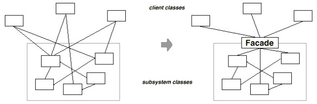

But : Fournir une interface simple à un sous-système complexe.

Utilisations
Cacher la complexité
Fournir un vocabulaire unifié pour utiliser un sous-système complexe.Permet de contrôler l'ordre des opérations et de cacher les détails techniques des sous-systèmes.
Protéger son code des évolutions des sous-systèmes
Ce pattern permet de faire un sas entre une application et les APIs (internes ou externes) qu'elle utilise :On définit une façade, exprimée dans le vocabulaire de l'application.
Le code de l'appli utilise uniquement cette façade pour utiliser l'API.
Ça laisse la possibilité de changer de lib, ou de s'adapter à ses modifications en n'ayant que la façade à modifier, sans rien changer d'autre dans le code.
On recontre aussi ce pattern lorsqu'on utilise une lib écrite dans un autre langage.
Par exemple, utilisation d'une lib C depuis du code java.
On écrit une classe qui va appeler l'exécutable C, s'occuper d'analyser les résultats et les mettre dans des objets java.
Le code client n'utilise que cette façade, sans même savoir que du C est appelé.
Exemple
Logiciel d'astronomie avec deux fonctionnalités : carte du ciel et éphémérides (liste des positions des planètes).Chacune de ces fonctionnalités a besoin du calcul d'éphéméride (calcul de la position des planètes), effectué par le package
ephemeris.
Ce package est complexe, car différents calculs sont possibles, en fonction de la précision voulue, des planètes demandées, des dates demandées...
Une façade (
Ephemeris) permet au code client d'utiliser le package sans avoir besoin d'en connaître les détails.
ephemeris
├── ELP82.java
├── EphemerisException.java
├── Ephemeris.java
├── LowPrecision.java
├── Meeus1.java
├── package.html
├── PlanetaryTheory.java
├── Pluto99.java
├── SolarSystem.java
├── SwissEphemeris.java
└── vsop87
├── DataVSOP87A_Earth.java
├── DataVSOP87A_Jupiter.java
├── DataVSOP87A_Mars.java
├── DataVSOP87A_Mercury.java
├── DataVSOP87A_Neptune.java
├── DataVSOP87A_Saturn.java
├── DataVSOP87A_Uranus.java
├── DataVSOP87A_Venus.java
├── package.html
└── VSOP87.java
class Ephemeris{
public static double[] compute(
double[] jds,
int[] bodies,
int referenceFrame,
double precision,
boolean velocities
) throws EphemerisException{ ... }
}
Le pattern façade permet de smplifier l'utilisation du sous-système pour la plupart du code client, sans cacher les détails au code qui en a besoin (on peut laisser les classes publiques dans le sous-système).
En rendant inutile l'utilisation des détails par le code client, ce pattern permet de réduire le couplage entre le sous-système et le reste.
Dans un système complexe, si on veut organiser les sous-systèmes en couche, on peut simplifier les dépendances en ne permettant la communication entre couches qu'avec des façades.
Le pattern Façade répond à un besoin similaire au pattern Proxy, mais sans chercher à cacher l'objet (ou les objets) protégés par le pattern.